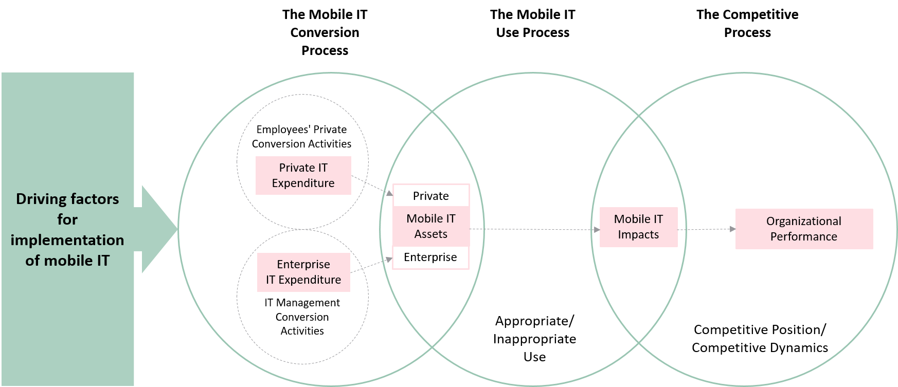
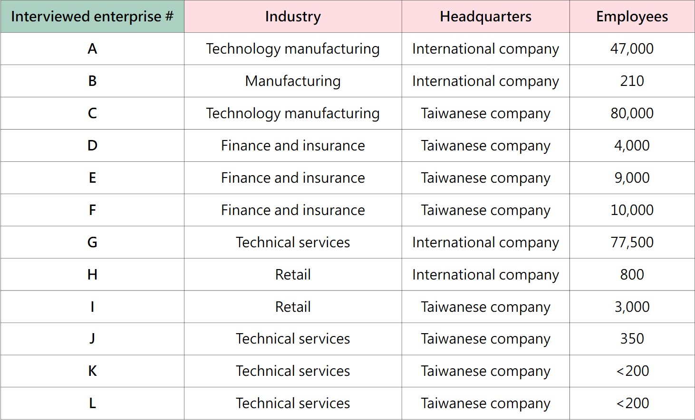
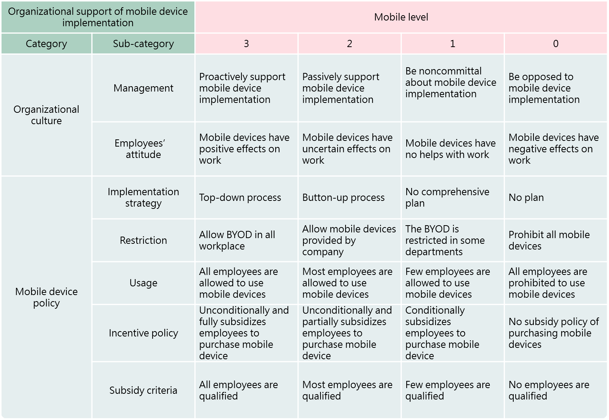
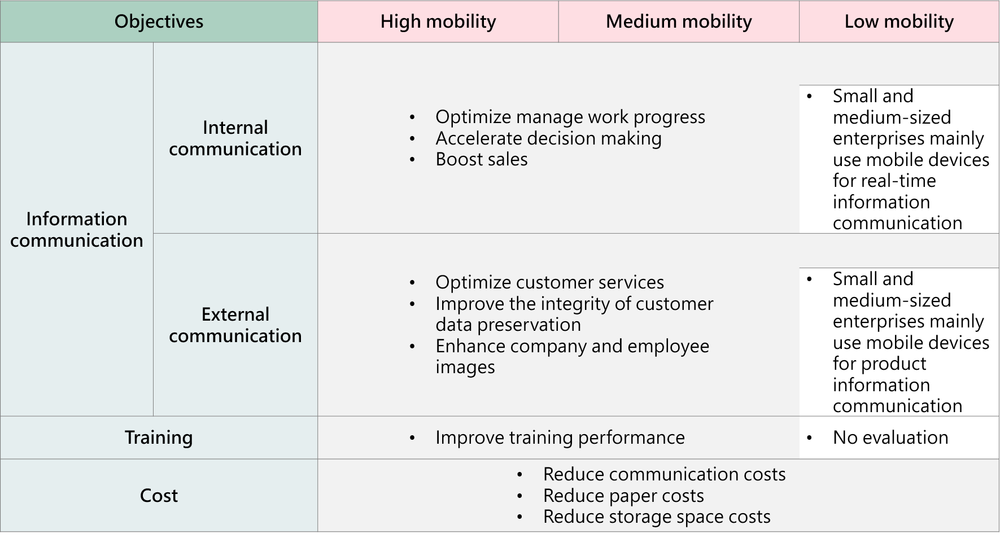

With the popularization of mobile technology (smartphones, tablets) and the more comprehensive development of related applications and systems, many foreign companies are actively investing in promoting internal mobile applications. They expect that smartphones and tablets will help employees improve employees’ work performance. To explore their factors for implementing mobile devices, strategies of the implementation, and performance effects of mobility, this study selected 12 companies that have implemented mobile devices in the workplace and invited the supervisors who are responsible for the implementations to conduct focus group interviews. The results of the study can provide a comprehensive model for companies that are planning to implement innovative technology in the workplace.
(Note: The principal investigator of the research project is Professor Hsiu-Ping Yueh. This research project was funded by the Ministry of Science and Technology (NSC100-2628-S-002-001-MY3, NSC 103-2628-S-002-002). The research results were published in the Journal of Library and Information and Studies, 2016.)
In this research project, I served as a research project assistant. I recruited managers/supervisors who are responsible for implementing mobile technology in the enterprises to participate in focus group interviews. At the same time, I was also responsible for the analysis of focus group interview data, writing reports, and publishing research results.
How to independently recruit participants?
How to analysis the data?
The purposes of the study had to be clearly defined at the beginning in order to design the interview outline and the analysis structure. In addition, literature reviews and industrial report reviews were conducted to provide the inputs to the analysis structure.
How to increase the objectivity of the qualitative data?
The study used a quantitative analysis method, Kendall’s ω, to present the reliability of the results. Totally, five data analyzers including myself analyzed the data. A significant alignment among the results provided by the analyzers was shown with the value of Kendall’s ω.
Standing upon the shoulders of giants
A Model for Mobile IT Business Value Creation was used and modified to define the data analysis structure in the study. This model was proposed in the Journal of MIS Quarterly Executive which is an important journal for industrial managers to acquire knowledge of management and business strategies.
Focus group interviews
Two focus group interviews were conducted. In total, 12 managers/supervisors of the enterprises participated in the interviews.
Analysis method and tool
A Rubrics of enterprise mobility was created and used to evaluate the mobility level of each enterprise. Five experts including myself with the relevant knowledge and backgrounds of organization learning and development were invited to analyze the data. Kendall’s ω was used to analyze the reliability of the evaluation.
The key factors for mobility enterprise
The Mobile IT Conversion Process
The approaches of implementing mobile technology are vital for the later strategy plans. The enterprises with medium to high levels of mobility mostly initiate implementations of mobile technology by senior leaders. The management and employees are empowered to plan and practice the relevant activities. The group intelligences generate comprehensive plans and strategies of mobility such as system infrastructure, information security policy and performance evaluations.
However, the small and medium-sized enterprises with low mobility levels rely on leader’s independent decisions. The limited resources and control management style cause the lack of complete plans.
The Mobile IT Use Process
The enterprises with medium to high levels of mobility provide multiple incentives including purchasing supports of mobile devices and establishing desirable archetypes of using mobile devices, improve relevant policy communications, and conduct project competitions to increase employees’ engagement in implementing mobile technology. These activities enhance employees’ positive perceptions of performance increases because of using mobile technology in the workplace.
The Competitive Process
Although implementing mobile technology can improve work performances, the enterprises must face the challenges of excessive information communications that increase workloads, decreases in work and life balances, and employees’ overmuch reliance on mobile technology. These challenges may decrease the efficiency of the implementation and employees’ work satisfaction.
Vary organizational performances causing by mobile technology among enterprises with different mobile levels
The performances causing by implementing mobile technology can be seen in the following table. Overall, it decreases the operation, training, and storage costs, and improves communication efficiency, customer services, and enterprise images. In terms of the small to medium scale enterprises with low motilities, the values of mobile technology are mainly about real-time communications with multi-media information.
Successful implementation of mobile technology requires comprehensive and rolling wave planning
The key factors for mobility enterprise
During the process of implementing mobile technology, enterprises are suggested incorporating the opinions of mid-level managers and grassroot level employees to increase the success of the implementation.
The Mobile IT Conversion Process
System infrastructures, information security policies, performance evaluations are the strategies that needs to be considered while implementing mobile technology in the workplace. These strategies are also helpful for evaluating the outcomes of implementing mobile technology during the following processes.
The Mobile IT Use Process
During this process, enterprises are recommended to enhance employees’ knowledge and skills on using mobile devices to support work task. Creating efficient channels to gain employees’ feedback is also important for knowing employees’ expected performances. Therefore, the adaptation of mobile technology and work processes can be improved through the optimization of the individual work performance of employees.
The Competitive Process
Enterprises are recommended to continuously communicate the policies of using mobile technology in workplaces with employees and provide supports for employees to learn how to increase performances by using mobile technology.
Organizational performance
Enterprises are recommended to define evaluations of key results in the Mobile IT Conversion Process to continuously track performance improvements.
Publication
This study was published in the Journal of Library and Information Studies that is indexed in Taiwan Social Sciences Citation Index (TSSCI).[PDF]
Reviewers’ comments